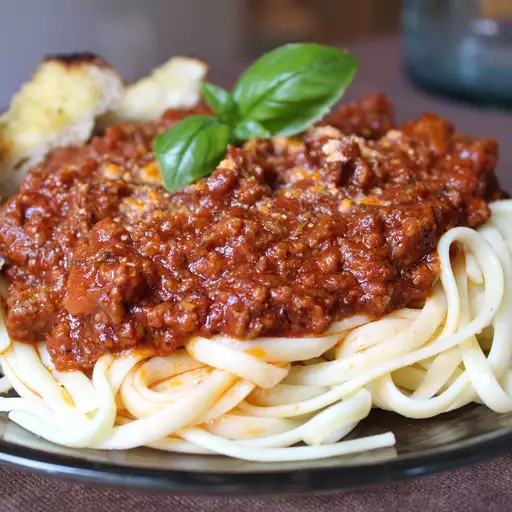

Wedding Gift Spaghetti Sauce

Description
This recipe was given to me as part of a
wedding gift recipe collection from a very
dear friend. It is rich, aromatic, flavorful
and makes A LOT. So please grab the biggest
pot you can find. I mean REALLY BIG. Extra
sauce freezes well for future pasta dishes
Prep Time:
10 mins
Cook Time:
2 hrs 30 mins
Total Time:
2 hrs 40 mins
Servings:
30
Yield:
30 servings
Ingredients
- 1/2 cup butter
- 3 tablespoon olive oil
- 1 large onion, chopped
- 3 cloves garlic, chopped
- 1 pound ground beef
- 1 pound mild sausage
- 4 teaspoon italian seasoning
- 2 teaspoon salt (Optional)
- 2 teaspoon dried rosemary
- 1 1/2 teaspoon dried oregano
- 1/2 teaspoon ground black pepper
- 76 fluid ounces water
- 1 (29 ounces) can tomate puree
- 3 (6 ounce) cans tomate paste
Steps
-
Heat butter and olive oil together with
onion and garlic in a large pot over medium
heat; cook and stir ground beef and sausage
in the onion mixture until browned and crumbly,
10 to 15 minutes. Stir Italian seasoning, salt,
rosemary, oregano, and black pepper into ground
beef-sausage mixture; simmer for 20 minutes.
-
Pour water, tomato puree, and tomato paste
into ground beef-sausage mixture; simmer,
stirring occasionally, over low heat until
flavors have combined, at least 2 hours.